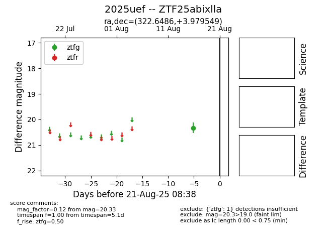

Target 2025uef at 2025-08-21 08:38, see:
FINK: fink-portal.org/ZTF25abixlla
Lasair: lasair-ztf.lsst.ac.uk/objects/ZTF25abixlla
ALeRCE: alerce.online/object/ZTF25abixlla
TNS: wis-tns.org/object/2025uef
YSE: ziggy.ucolick.org/yse/transient_detail/2025uef
alt names
ZTF25abixlla (ztf,alerce)
2025uef (tns,yse)
coordinates:
equatorial (ra, dec) = (322.6486,+3.97955)
galactic (l, b) = (57.6504,-32.44850)
photometry
last ztfg=20.33
1 ztfg detections
